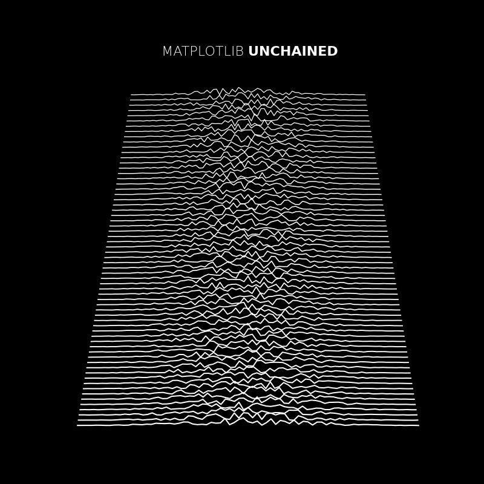

Note
Click here to download the full example code
MATPLOTLIB UNCHAINED¶
Comparative path demonstration of frequency from a fake signal of a pulsar (mostly known because of the cover for Joy Division's Unknown Pleasures).
Author: Nicolas P. Rougier
import numpy as np
import matplotlib.pyplot as plt
import matplotlib.animation as animation
# Fixing random state for reproducibility
np.random.seed(19680801)
# Create new Figure with black background
fig = plt.figure(figsize=(8, 8), facecolor='black')
# Add a subplot with no frame
ax = plt.subplot(111, frameon=False)
# Generate random data
data = np.random.uniform(0, 1, (64, 75))
X = np.linspace(-1, 1, data.shape[-1])
G = 1.5 * np.exp(-4 * X ** 2)
# Generate line plots
lines = []
for i in range(len(data)):
# Small reduction of the X extents to get a cheap perspective effect
xscale = 1 - i / 200.
# Same for linewidth (thicker strokes on bottom)
lw = 1.5 - i / 100.0
line, = ax.plot(xscale * X, i + G * data[i], color="w", lw=lw)
lines.append(line)
# Set y limit (or first line is cropped because of thickness)
ax.set_ylim(-1, 70)
# No ticks
ax.set_xticks([])
ax.set_yticks([])
# 2 part titles to get different font weights
ax.text(0.5, 1.0, "MATPLOTLIB ", transform=ax.transAxes,
ha="right", va="bottom", color="w",
family="sans-serif", fontweight="light", fontsize=16)
ax.text(0.5, 1.0, "UNCHAINED", transform=ax.transAxes,
ha="left", va="bottom", color="w",
family="sans-serif", fontweight="bold", fontsize=16)
def update(*args):
# Shift all data to the right
data[:, 1:] = data[:, :-1]
# Fill-in new values
data[:, 0] = np.random.uniform(0, 1, len(data))
# Update data
for i in range(len(data)):
lines[i].set_ydata(i + G * data[i])
# Return modified artists
return lines
# Construct the animation, using the update function as the animation director.
anim = animation.FuncAnimation(fig, update, interval=10)
plt.show()
Keywords: matplotlib code example, codex, python plot, pyplot Gallery generated by Sphinx-Gallery